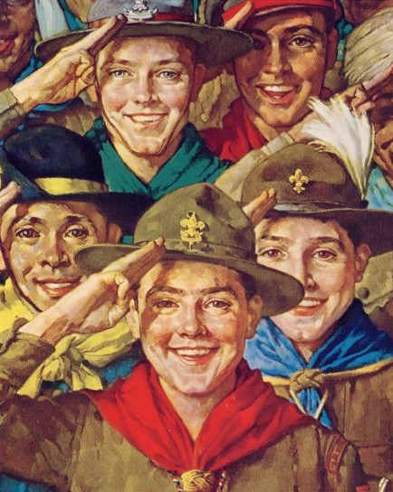

The scouting movement started with a man named Lord Baden Powell in 1908. Scouting in these early days was very different from the scouting programme we recognize today. In this section we explore the beginnings of scouting; such as what inspired it, what was the programme like, and the reasons for its popularity.

A Comprehensive History and Troop 336 Website
The Story of Lord Baden Powell

Lord Baden Powell was born February 22, 1857 in Paddington, the sixth of ten children. After his father dies at age three, he developed outdoor skills as he dodged his teachers and hunted for food in a nearby forest. After failing his university exams, he then joined the military where he went on to serve for 35 years. He became a national hero when his troops were placed under siege for 217 days but managed to survive due to Powell’s military tact. During the latter part of his service, he wrote a bestselling manual titled ”Aids For Scouting" that would lay down the foundations for his rewritten book, “Scouting for boys." These were instant successes and all throughout England boys started banding together to form Scouting groups, thus sparking the scouting movement which in a matter of years would swell in number and make it’s way across the globe. For his accomplishments in initiating world scouting, Baden-Bowell became known as the “Chief Scout of the World.”
Early Scouts

The early days of scouting saw the introduction of multiple publications, most notably Boys Life Magazine and Scouting Magazine, both of which continue to be published to this date. It was during his time that the Order of the Arrow, scouting’s national; honour society, was formed. Because of the nature of the helping nature of scouts and WWI going on, British and American scouts were heavily invested in the war effort. During the First World War, scouts in America planted 12,000 victory gardens, collected tons of peach pits and nuts to make gas masks, distributed more than 300 million samples of Uncle Sam posters, and sold hundreds of millions of dollars’ worth of “Liberty War Bonds” to fund the war.